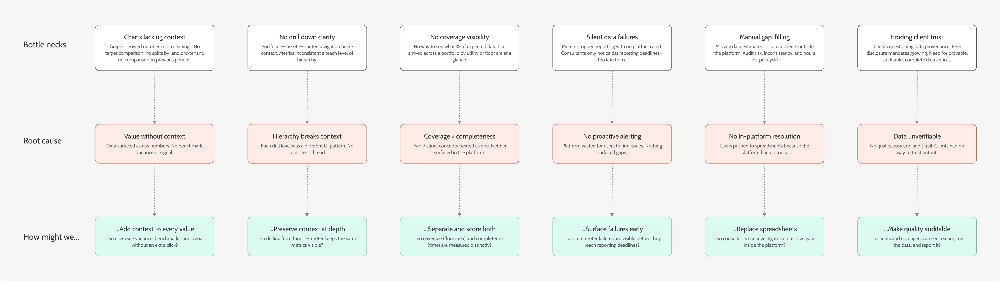
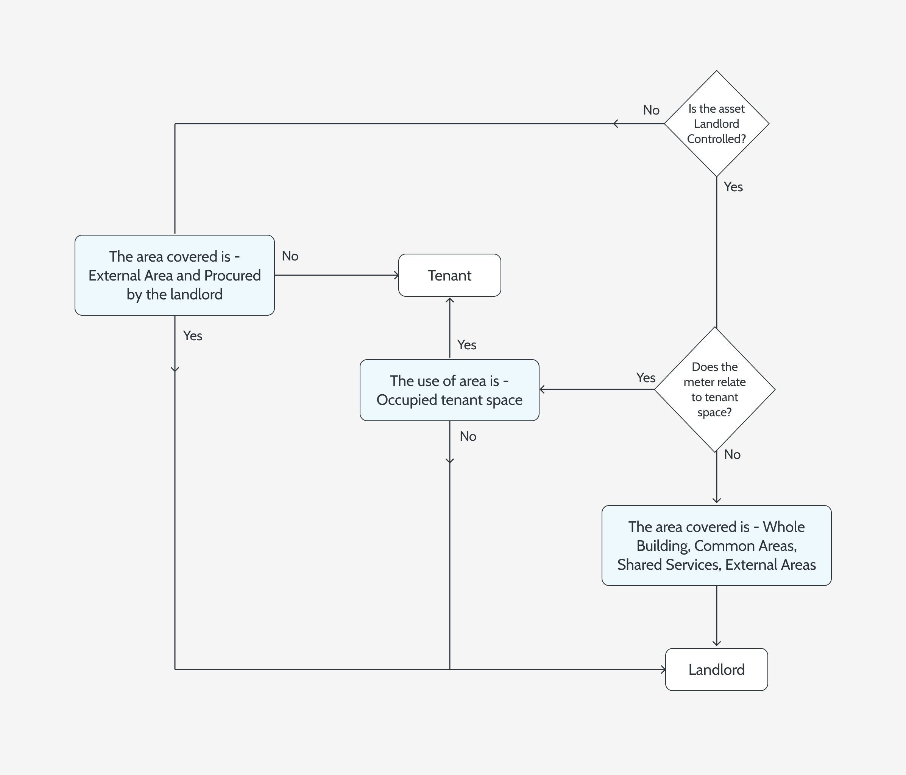
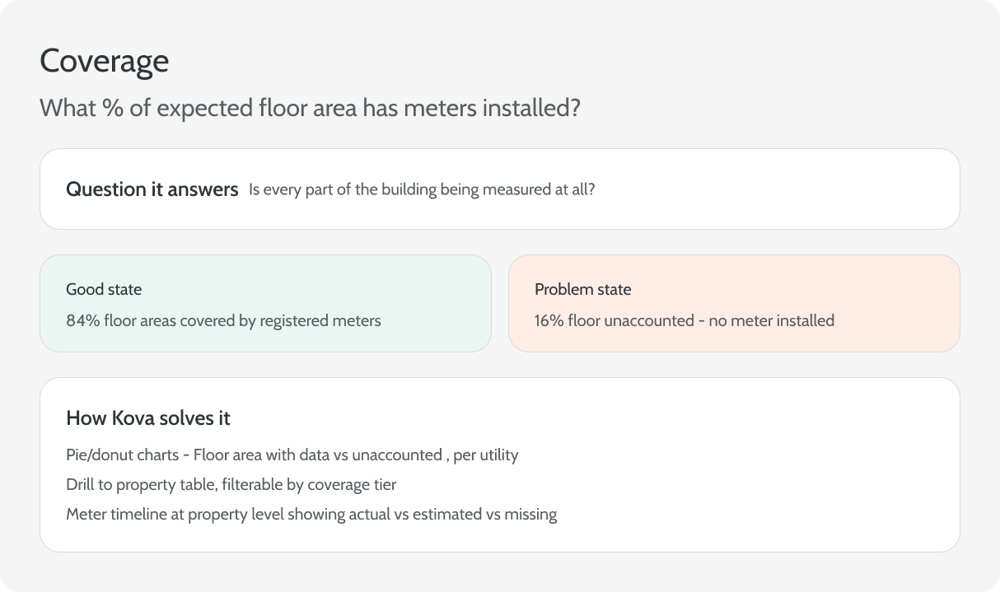
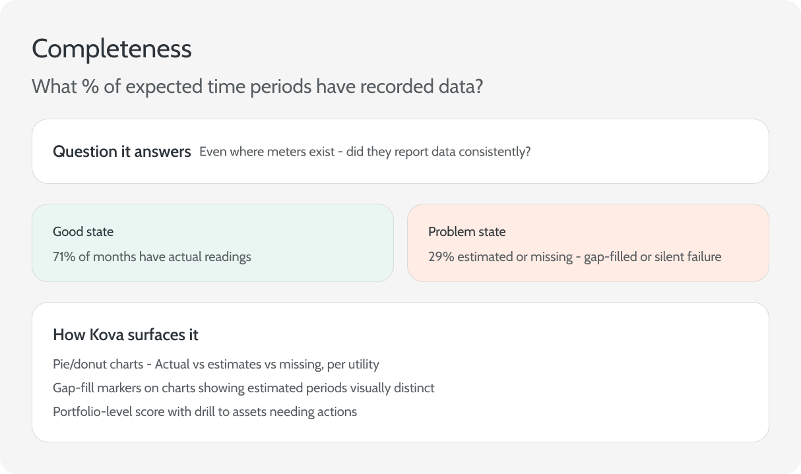

Kova's analytics were technically rich but visually opaque. This project redesigned the data visualisation layer and built a data intelligence module.
Data IntelligenceVisualizationDashboardsAnalytics
Client
Thornfield
Role
Lead Product Designer
Status
✓ Shipped & live
Best viewed on a larger screen
This interactive dashboard is designed for desktop or laptop. Rotate your device or open on a wider screen to explore the full prototype.
KOVA
Portfolio›Metropolitan Holdings
2024
2023
3Y
Metropolitan Holdings
32 assets · UK & Ireland · Last updated 3 hrs ago
Carbon intensity
41.2
kgCO₂e/m²
▼ 8.4% vs target
Electricity
127
kWh/m²
▼ 5.1%
Gas
38.4
kWh/m²
▲ 2.3%
Water
0.81
m³/m²
▼ 11.2%
Waste recycled
63%
of total
▲ 4pt vs LY
Data quality
78
/100 score
▲ 6pt this quarter
Carbon intensity over time
LandlordTenantAll
Data quality
78
Overall score
▲ 6pt this qtr
Coverage (floor area)84%
Completeness (time)71%
Actual readings58%
Coverage
Completeness
Actual
Introduction
Data visibility that drives decisions
Kova is an energy intelligence platform built for Thornfield Energy, a sustainability consultancy managing utility data across large commercial real estate portfolios. Fund managers needed more than raw numbers — they needed descriptive analytics to understand portfolio performance, diagnostic tools to drill down to root causes, and clear data quality signals to trust what they were looking at.
This project spanned two connected workstreams: a full redesign of the data visualisation layer — performance dashboards, carbon reporting, data quality widgets and drill-down flows — alongside building a new data quality intelligence module with coverage scoring, anomaly detection, gap identification and guided resolution flows.
Problem
The data existed. But it didn't answer any questions.
Kova had significant analytics capability — carbon reporting, utility performance, fund-level dashboards — but users couldn't use it effectively. The visualisations didn't offer enough context to diagnose issues, graphs weren't intuitive, and there was no easy way to see problem areas at a high level before drilling down.
Layered underneath was a second problem: the data feeding these visuals was often broken. Missing meters, duplicate reads, implausible spikes. Consultants couldn't trust what they were looking at without verifying it manually — and there was no tooling to help.
"I can't submit this report until I've checked every meter reading by hand. I just don't trust what the platform shows me."
Senior Sustainability Consultant, Thornfield Energy
The investigation journey was broken
When an asset manager spotted a data spike or problem, resolving it required logging in, being alerted to issues, drilling down manually, investigating internally, and then — critically — having to contact the team for help before anything could be documented. That handoff to consultants was an unnecessary bottleneck. The platform should have given users the tools to investigate themselves.
Current user journey — asset managers had to loop in ESG consultants to resolve data problems that the platform should have surfaced itself
Fund managers needed descriptive analytics to understand what was happening in their portfolio, and diagnostic analytics to drill down to root causes. That required both better visualisations and a way to surface data quality issues before they reached the reporting stage.
01
Charts lacked context
Graphs showed numbers, not meaning. Users couldn't easily see performance against targets, landlord/tenant splits, or what had changed vs the previous period.
02
No drill-down clarity
Moving from portfolio overview to asset to meter was confusing. Users lost context at each level and couldn't see the same metrics consistently across views.
03
No coverage visibility
There was no way to see, at a glance, what percentage of expected data had actually arrived across a portfolio by utility type or floor area.
04
Silent data failures
Meters could stop reporting and nothing would surface it. Consultants only noticed when reporting deadlines hit and data was already missing.
05
Manual gap-filling
When data was missing, consultants manually estimated values in spreadsheets — creating audit risk, inconsistency, and wasted hours on every reporting cycle.
06
Eroding client trust
Clients were starting to question data provenance. As ESG disclosure mandates grew, the need for provable, auditable, complete data became critical.
Discovery
Users knew what questions they needed answered. The platform didn't.
Before redesigning anything, we ran discovery across both workstreams. For data visualisation, we ran structured user interviews and annotated review sessions with fund managers, ESG managers and sustainability consultants. For data quality, we focused on how consultants currently assessed data health and where failures occurred.
All sessions were stored in Dovetail — using its AI features to tag sentiment, surface recurring pain points and group themes across user types. That gave me a structured foundation for synthesis, though I listened back to every session myself, because the hesitations and hedges that shape a real insight rarely survive a summary.
Three design questions that framed our research — data viz needs, navigation impact, and balancing the needs of different user types
Mapping the experience
We mapped the full experience across user types — from the fund manager trying to understand portfolio-level performance, to the consultant trying to diagnose a meter issue, to the data admin trying to understand why the numbers looked wrong. The experience map surfaced where the platform was falling short at each stage.
Experience map — user needs organised across four key phases: spotting problems, analysing data, drilling down, and future areas
The swim-lane diagram below traces what actually happened when a fund manager spotted a data problem — and why resolving it took three people instead of one.
As-is user journey — three roles mapped across five phases, showing how a simple data query became a multi-person escalation chain
What we heard on data visualisation
Users could navigate the platform but consistently struggled to interpret what they saw. Charts showed values without context — no benchmark comparison, no trend direction, no clear signal about what to do next. Multiple users noted the same issue:
"There is too much going on... no way to know what to look at first."
Asset Manager, Thornfield Energy
At the fund level, users wanted to see breakdowns by floor area, sector and landlord/tenant split without clicking through multiple pages. At the asset level, they wanted consistency — the same metrics available at the same level of detail. A configurable view, where users could surface the most relevant data first, came up repeatedly.
User testing — Like-for-Like carbon chart. Feedback surfaced the need for annual comparison, positive framing of included assets, and manual date range selection.
User testing — meter view. Key issues: colour coding for data gaps was missed, incomplete vs not covered was unclear, and users couldn't drill into individual meters.
How might we
Visualise data in a way that highlights key issues with minimal clicks — and lets fund managers drill down into problem areas with full context at every level?
Ideation
A redesigned analytics layer and a new intelligence module
After journey mapping, interview transcripts from eight sessions were affinity-mapped into six problem categories. Dovetail's AI generated an initial clustering of themes across the sessions — which I then interrogated, collapsed and re-labelled until the groupings reflected what I'd actually heard rather than what sounded plausible. Claude helped reframe each root cause into HMW questions, which became the format we used to set the brief with product and engineering stakeholders.

Research synthesis — six bottlenecks traced to root causes and reframed as "How might we" questions, used to set the brief with product and engineering
Phased roadmap — ship incrementally, validate between phases
The work was broken into four phases, each tackling a different data domain — performance, dashboards, data quality, and site-wide improvements. This let us ship incrementally and validate with users between phases rather than redesigning everything at once.
Phased delivery roadmap — work broken across four phases with features categorised by performance, dashboard, data quality and site-wide scope
Four principles shaped every decision
I mapped the full experience across user types — from the fund manager trying to understand portfolio-level performance, to the consultant trying to diagnose a meter issue, to the data admin trying to understand why the numbers looked wrong. The experience map surfaced where the platform was falling short at each stage.
Diagnosis before data
Every chart and table needed to answer a question, not just display numbers. If a user couldn't tell what to do differently from what they saw, the design had failed.
Context alongside every value
A consumption figure alone means nothing. Every value surfaces variance, benchmark comparison, data category and the context to evaluate whether it matters.
Quality is a first-class metric
Data quality shouldn't be a hidden audit screen. Coverage and completeness belong on the fund dashboard, next to performance — because they determine whether performance data can be trusted.
Portfolio to meter, seamlessly
Users need to move from portfolio overview down to an individual meter without losing context. Every level shows the same key metrics at the relevant scope — no dead ends, no backtracking.
Before designing, we had to map the rules
The design principles were clear — but they couldn't be executed until the underlying business logic was untangled. How a meter gets classified as landlord or tenant isn't a UI decision; it's a branching decision tree driven by asset control, space use, and utility type. Getting it wrong in the design would have meant building the wrong thing entirely.
I mapped the scope classification rules and target-setting logic as explicit decision flows before touching a frame in Figma. This gave us a shared model — between design, product and engineering — of what the data meant and how it should behave in the interface.

L/T classification logic — determining procurement responsibility based on asset control and area type
Carbon target-setting logic — three distinct pathways (custom, NZC import, action-based) each with different inputs and configuration states. Mapping this upfront prevented scope creep during build and informed the stepped UI flow in the target-setting module.
Separating two concepts the platform had conflated
During early usability testing of data quality wireframes, participants consistently confused coverage and completeness — and the platform had been treating them as one number. This systems diagram was built to resolve the ambiguity, first as an internal alignment tool, then as a shared reference with the client.

Coverage defined, with its own question, failure state, and surface in the Kova UI

Completeness defined, with its own question, failure state, and surface in the Kova UI
Solution
A redesigned analytics layer — and a new intelligence module beneath it
Click between tabs to explore the data and interactions.
Best viewed on a larger screen
This interactive dashboard is designed for desktop or laptop. Rotate your device or open on a wider screen to explore the full prototype.
Carbon
↑11%
47.2 kg
Electricity
↓14%
131 kWh
Gas
↓9%
18.4 kWh
Water
↑9%
0.84 m³
Waste
↑33%
2.1 t
DQ Score
72%
portfolio
Carbon intensity trend
kgCO₂e/m² · 2020–2024
Consumption mix
% of total energy use
Asset performance ranking
Carbon intensity kgCO₂e/m² — traffic light vs fund target
Coverage & completeness by utility
% of portfolio with data present
Data status breakdown
Across all meters · all utilities
Asset
Carbon
Electricity
Water
DQ
Status
Reduction progress vs targets
Carbon NZC pathway
Actual vs net-zero trajectory
Data quality by utility
Monthly carbon (kgCO₂e/m²)
Meter breakdown
Performance at a glance — with the context to act on it
The fund-level dashboard was redesigned to surface six key performance cards — carbon emissions, energy intensity, electricity, gas & thermals, water, and waste — each showing variance from the previous period. Data quality is a first-class card, not buried in a separate section.
→Variance indicators - Every metric shows % change vs prior period — with clear red/green signposting
→Data quality widget - Coverage and completeness scores surface directly on the fund dashboard
→Click-through cards - Each performance card drills into a dedicated view — scope breakdowns, asset-level tables, chart options
→Configurable columns - Users control which columns are shown — GAV, sector, location, floor area
Best viewed on a larger screen
This interactive dashboard is designed for desktop or laptop. Rotate your device or open on a wider screen to explore the full prototype.
Fund Dashboard
Metropolitan Holdings · 32 assets · FY 2024
Core City Office
London Retail
Mixed Portfolio
Carbon
↑11%
47.2 kgCO₂e/m²
Electricity
↓14%
131 kWh/m²
Gas
↓9%
18.4 kWh/m²
Water
↑9%
0.84 m³/m²
Waste
↑33%
2.1 t recycled
DQ Score
72%
portfolio avg
Carbon intensity trend
kgCO₂e/m² · 2020–2024
Consumption mix
% of total energy use
Asset performance ranking
Carbon intensity kgCO₂e/m² — traffic light vs fund target (45.0)
Fund dashboard — 6 KPI cards with YoY variance, carbon trend vs NZC pathway, consumption mix donut, and asset performance ranking against target
L/T splits, gap-fill markers, and configurable views
The electricity, gas and carbon performance charts were redesigned to show landlord/tenant splits without requiring a separate drill-down, gap-filled data clearly marked as estimated, and a configurable view toggle so users could switch between performance-against-target and L/T comparison.
→L/T split- Landlord and tenant data visible in the same chart — without diving further into asset data
→Gap-fill markers - Estimated/gap-filled periods visually distinct from actual data
→Configurable toggle - Switch between target performance and L/T breakdown view
→Period comparison - Previous period overlaid as reference line — quarterly or monthly granularity
Best viewed on a larger screen
This interactive dashboard is designed for desktop or laptop. Rotate your device or open on a wider screen to explore the full prototype.
Carbon intensity — Metropolitan Holdings
kgCO₂e/m² · 2020–2024 · 32 assets
View
Landlord / Tenant
Carbon scope
Benchmark
Target
GRESB
None
Carbon intensity chart — toggle between landlord/tenant split and carbon scope views, with target pathway or GRESB benchmark overlay
Coverage and completeness — separated and made actionable
The data quality dashboard answers two distinct questions: how much of the expected floor area is covered by meters (coverage), and how much of the expected data has actually been collected (completeness). Both are visualised as donut charts and broken down at the property level in a sortable, filterable table.
→Coverage score - Floor area covered by meters vs unaccounted floor area — per utility, per period
→Completeness score: - Actual vs estimated vs missing data points — as % of total expected data points
→Property drill-down: - Click any donut segment to filter the asset table to just that coverage tier
→Meter timeline: - At property level per-meter view showing actual, estimated, and missing months
Best viewed on a larger screen
This interactive dashboard is designed for desktop or laptop. Rotate your device or open on a wider screen to explore the full prototype.
Data quality module — portfolio DQ score, coverage & completeness by utility, data status breakdown, and filterable asset table
Setting targets that actually connect to the data
Target setting was one of the most requested and most broken features. Users needed to set reduction targets per utility, connect them to NZC pathways for carbon, and see performance against those targets in the same charts. We designed a structured flow — create new vs import from NZC, intensity vs absolute, reduce by vs reduce to — that matched how real ESG programmes are managed.
→Carbon targets - Create new (intensity/absolute) or import from NZC — custom pathway, action-based, or top-down
→Utility targets - Energy, electricity, water, gas & thermals — intensity or absolute, reduce by % or reduce to value
→Waste targets - Separate targets for recycled waste (increase to) and waste generation (reduce by) with baseline and target year
→In-chart visibility - Targets display directly on performance charts — so users see performance against target without leaving the dashboard
Best viewed on a larger screen
This interactive dashboard is designed for desktop or laptop. Rotate your device or open on a wider screen to explore the full prototype.
Target Setting
Metropolitan Holdings · Set and track reduction targets per utility
Active targets
+ Add new target
Carbon NZC pathway
kgCO₂e/m² · Actual vs net-zero trajectory · 2020–2035
Custom
Science-based
Top-down
Target type
Intensity
kgCO₂e/m² · NZC linked
Baseline year
2019
68.4 kgCO₂e/m²
Reduction target
41%
by 2030 · −2.5% YoY
Current progress
31%
10pp behind trajectory
Target setting — active targets per utility with NZC pathway toggle, detail cards for type, baseline, reduction %, and current progress
Portfolio levels present — in context, every step
Navigation flows naturally from portfolio overview down to individual meter. Breadcrumb navigation keeps users oriented as they drill down, and each level surfaces the same key metrics at the relevant scope. The asset list supports favouriting, filtering by sector and country, and sorting to surface the most material assets first.
→Breadcrumb nav - Portfolio → Fund → Asset → Meter — always visible and clickable throughout
→Favouriting - Users can pin priority assets to the top of their fund view for quick access
→Consistent metrics - Same performance and quality signals available at every level — no context lost on drill-down
→Map view - Asset portfolio visualised on a map with fund-level separation — toggleable for relevance
Best viewed on a larger screen
This interactive dashboard is designed for desktop or laptop. Rotate your device or open on a wider screen to explore the full prototype.
Portfolio›Metropolitan Holdings›14A Broadgate
Data quality by utility
Monthly carbon (kgCO₂e/m²)
Meter breakdown
UK & Ireland
Asset drill-down — breadcrumb navigation, per-asset KPIs with YoY trends, data quality by utility, monthly carbon trend, meter breakdown, and map location
Reflection
What this project taught me
01
UI-heavy projects need UX rigour too. The data visualisation work was primarily UI — but the biggest design decisions came from research. What context users needed alongside numbers, what questions they were actually trying to answer, how they moved between levels. Getting that wrong at the design principle stage would have made the visual work meaningless.
02
Separate distinct problems clearly — even in the same product. Coverage (floor area) and completeness (time) are related but different. Treating them as one metric early on caused confusion in testing. Once separated into distinct donut charts with clear definitions, comprehension improved immediately. Conceptual clarity at the content level matters as much as visual clarity.
03
Configurable views require strong defaults. Users consistently asked for flexibility — favourite assets, customisable columns, configurable chart views. But the most important design decision was getting the defaults right. A blank or cluttered default state made the configurability feel like a burden, not a feature. Good defaults meant users rarely needed to configure at all.